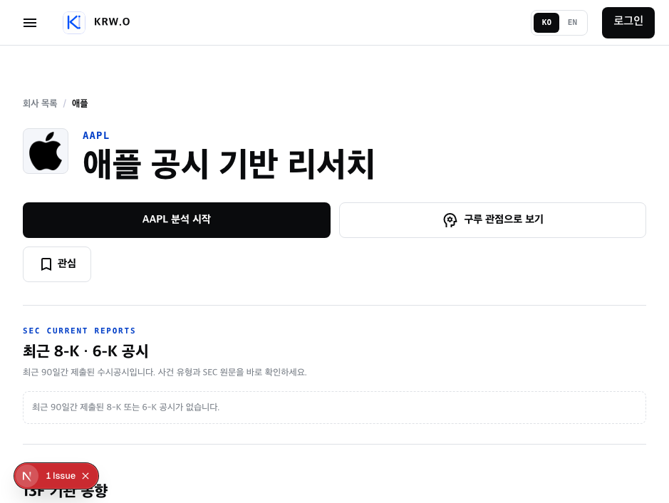
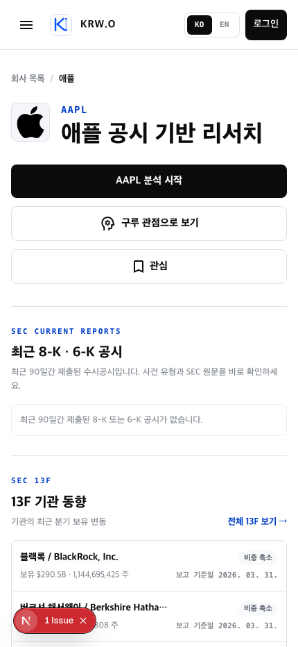

현재 화면은 로고·제목·여백·선의 톤이 일관되고 모바일도 읽기 쉽습니다. 다만 939px 전후에서 행동 버튼이 어색하게 줄바꿈되고, 데이터가 없는 공시 영역이 첫 콘텐츠를 차지해 “애플을 이해할 이야기”가 첫 화면에서 보이지 않습니다.
가장 먼저 손볼 한 가지태블릿 폭에서 분석 시작 / 구루 관점 / 관심을 동일한 행동 묶음으로 정렬하세요. 지금은 2개 버튼 아래에 ‘관심’만 남아, 의도하지 않은 빈 공간처럼 보입니다.
현재 상태

939px 데스크톱: 2개 버튼 뒤에 ‘관심’만 다음 줄로 내려갑니다.

430px 모바일: 읽기는 좋지만 행동 3개가 모두 큰 블록이 되어 첫 콘텐츠를 아래로 밉니다.
권장 수정
P0 · 레이아웃 버그에 가까운 지점
939px 폭의 ‘2 + 1’ 버튼 배치를 없앤다
현재 sm:grid-cols-2에서 분석 시작과 구루만 한 줄을 채우고 관심이 다음 줄에 홀로 남습니다. 768px 이상에서는 주요 CTA 1개 + 보조 행동 2개를 한 줄로 두거나, ‘관심’을 로고/티커 옆의 작은 토글로 옮기면 됩니다. 모바일만 세로 3개를 유지합니다.
데스크톱/태블릿
[ AAPL 분석 시작 ───────── ] [ 구루 ] [ ♡ 관심 ]
모바일
[ AAPL 분석 시작 ]
[ 구루 관점으로 보기 ]
[ ♡ 관심 ]
왜: StockAnalysis는 가격/핵심 정보 옆에 Watchlist·Alerts·Compare를 한 줄 도구로 묶고, Google Finance는 ‘Add to list’를 회사 식별 정보 근처에 작게 둡니다. 둘 다 주 작업과 보조 작업의 위계를 분리합니다.
P1 · 정보 순서
비어 있는 ‘최근 공시’를 축소하고 회사 이야기를 위로 올린다
지금은 “최근 90일 공시가 없습니다”가 첫 번째 본문 섹션을 차지합니다. 이는 유용한 사실이지만 AAPL을 이해하려 들어온 개인투자자에게는 첫 가치가 아닙니다. 공시가 없을 때는 한 줄 상태로 접거나 13F 뒤로 보내고, 회사 이야기 캐러셀을 영웅 영역 바로 다음에 배치하는 편이 목적과 맞습니다.
회사 식별 + 행동
↓
이번에 읽을 회사 이야기 (6컷)
↓
13F 기관 동향
↓
최근 공시 (있을 때 강조 / 없으면 한 줄 상태)
왜: Google Finance와 StockAnalysis 모두 회사 식별 바로 다음에 가격·핵심 정보·탭을 보여주고, 빈 상태를 페이지의 주인공으로 만들지 않습니다. KRW.O에서는 그 자리를 ‘회사 이야기’가 맡는 것이 차별점입니다.
P2 · 제목부 밀도
큰 제목의 여백 일부를 ‘회사를 한 문장으로 설명하는 정보’로 바꾼다
“애플 공시 기반 리서치”라는 제목은 명확하지만, 제목 아래에는 지금 행동 버튼만 있습니다. 티커 아래에 Apple · NASDAQ · 소비자 전자제품처럼 짧은 맥락을 넣고, 첫 캐러셀의 제목을 한 줄 미리보기로 노출하면 빈 여백이 의도된 정보 공간으로 바뀝니다. 숫자 대시보드로 과밀하게 만들 필요는 없습니다.
[ 로고 ] AAPL · Apple · NASDAQ
애플 공시 기반 리서치
아이폰 너머의 애플 — 서비스 생태계를 6장으로 보기 →